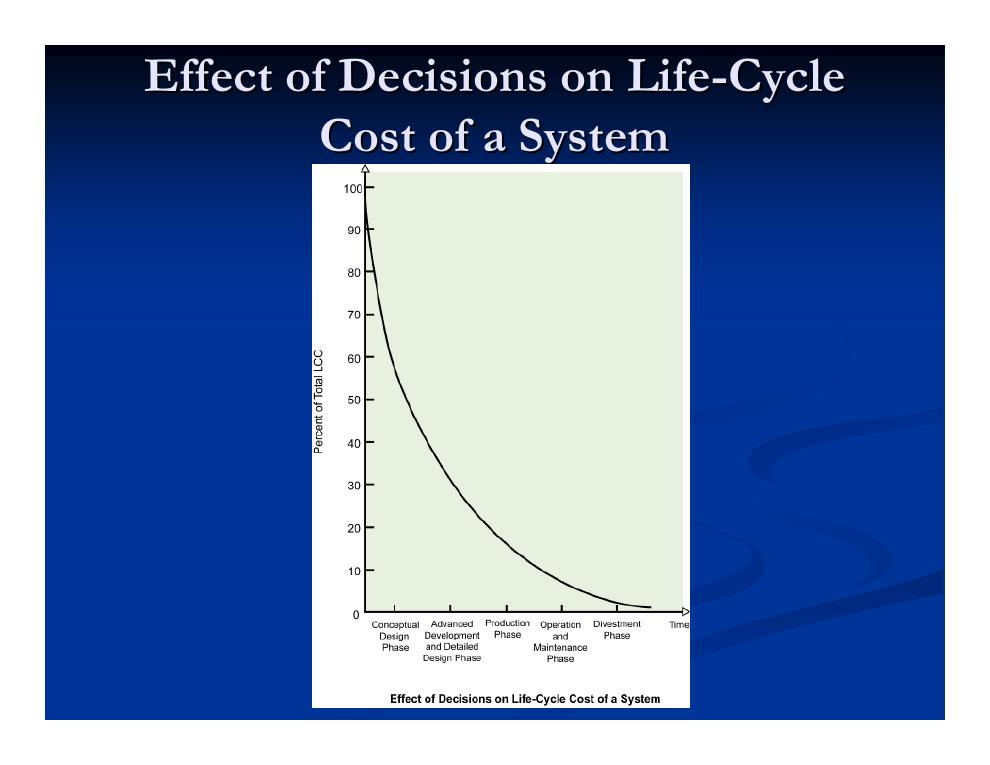
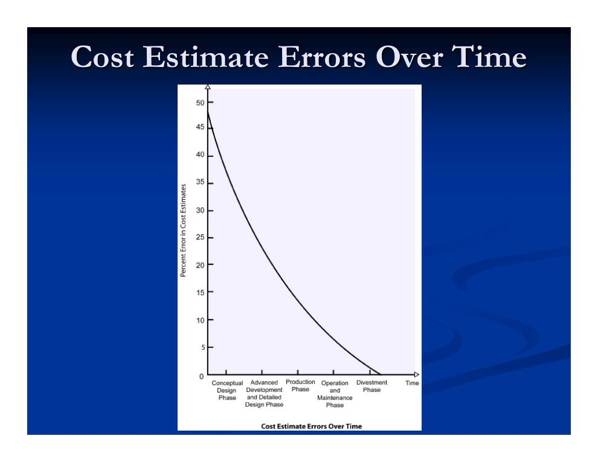
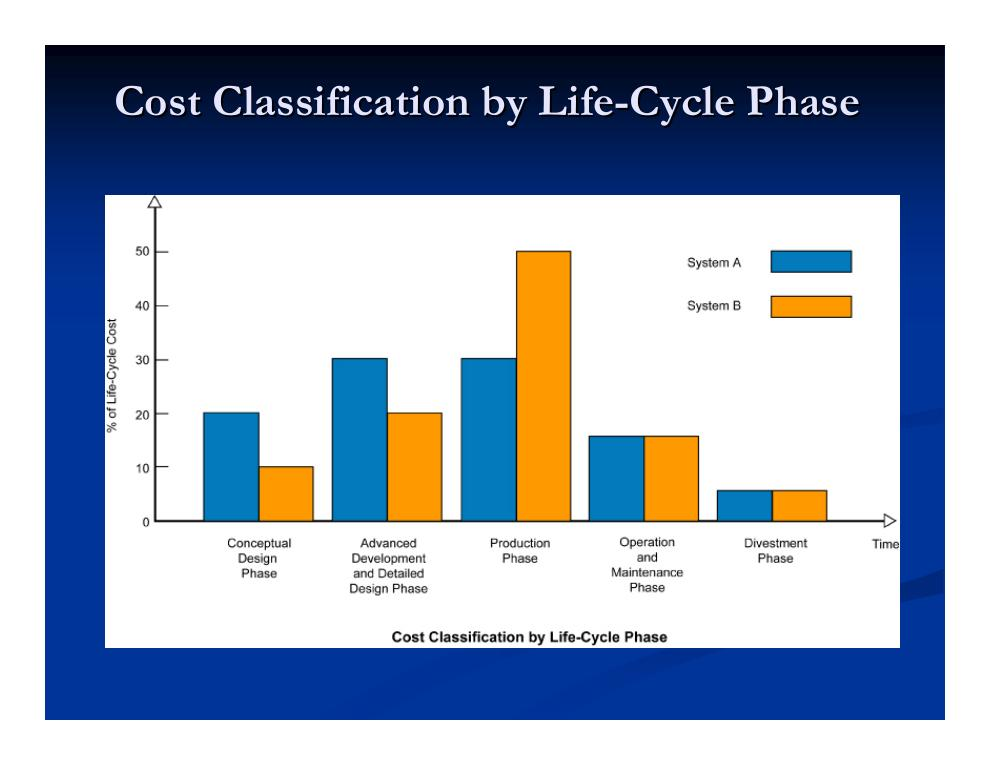
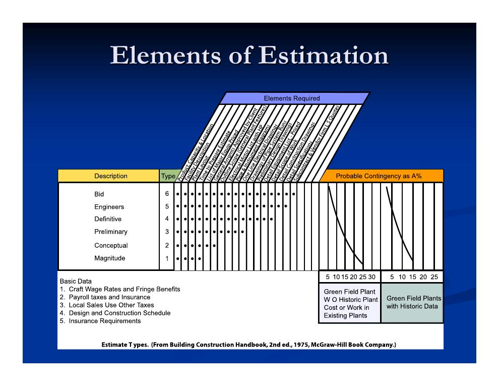

1. Rückblick: Vergabeverfahren – Ausschreibung und Verhandlung
Die Vorlesung schließt den Themenblock „Vergabeverfahren“ ab, der in Kapitel 2.2 ausführlich behandelt wurde. Ausgangspunkt ist erneut das Spektrum zwischen zwei Extremen:
| Extrem 1 | Extrem 2 | |
|---|---|---|
| Vergütung | Selbstkostenerstattung (reimbursable) | Festpreis (fixed price) |
| Produkttyp | Dienstleistung (Service) | Handelsware (Commodity) |
| Vergabe | Auswahl nach Reputation, Einigung per Verhandlung | Ausschreibung (Bidding) |
Die Folien zu Ausschreibung (Varianten, Vor- und Nachteile, Abwägungen bei Frist und Bieterzahl, Bewertungsmetriken, Ablauf, Eignungskriterien, öffentliche vs. private Vergabe, extrem niedrige Gebote, Nachunternehmergebote) und Verhandlung (Anwendungsfälle, Win-win-Potenzial, Verhandlungstipps, die vier „Todsünden“ nach Thompson) wiederholen den Stoff aus Kapitel 2.2, Abschnitt 8 – dort ist alles im Detail nachzulesen. Zwei Ergänzungen dieser Vorlesung sind neu:
- Frühe Ausschreibung für Fast-Tracking: Um überlappende Planung und Ausführung zu ermöglichen, kann bereits bei einem Planungsstand von etwa 30 % ausgeschrieben werden.
- Billigstbieter und Entwurfsqualität: Der Preisdruck des Billigstbieterprinzips kann sich besonders schädlich auf die Planungsqualität auswirken, wenn die Planung Teil der Leistung ist (Design-Build, CM at Risk). Unzuverlässige Billigstbieter sind ein reales Risiko – deshalb aggressiv präqualifizieren.
2. Bürgschaften (Bonds) und der Miller Act
Bürgschaften sichern den Bauherrn gegen den Ausfall des Bieters bzw. Auftragnehmers ab. Sie werden von Bürgschaftsversicherern (Surety Companies) gestellt und sind in den USA seit dem Miller Act von 1935 für öffentliche Bundesbauprojekte vorgeschrieben. Drei Arten sind üblich:
| Bürgschaftsart | Zweck | Übliche Höhe |
|---|---|---|
| Bietungsbürgschaft (Bid Bond) | Sichert ab, dass der Bieter im Zuschlagsfall den Vertrag auch eingeht. | Öffentlich: ca. 20 % der Angebotssumme (teils nur 5 %); privat: 5–10 % |
| Erfüllungsbürgschaft (Performance Bond) | Garantiert die vollständige Fertigstellung des Projekts zum Angebotspreis. | 100 % |
| Zahlungsbürgschaft (Payment Bond) | Deckt unbezahlte Rechnungen des Auftragnehmers (z. B. gegenüber Nachunternehmern und Lieferanten). | Gestaffelt: 50 % der Auftragssumme bis 1 Mio. $; 40 % zwischen 1 und 5 Mio. $; pauschal 2,5 Mio. $ über 5 Mio. $ |
- Kosten: etwa 1 % je 1.000 $ Auftragssumme bis 200.000 $; darüber niedrigere Sätze.
- Bürgschaftskapazität des Unternehmers: Der Versicherer bemisst sie am kurzfristig liquiden Nettovermögen („Net Quick Assets“): ohne Referenzbilanz etwa das 5- bis 6-Fache, bei langer zuverlässiger Erfolgsbilanz das 40-Fache und mehr.
3. Lebenszykluskosten (Life-Cycle Costing)
Die Lebenszykluskostenrechnung (Life-Cycle Costing, LCC) betrachtet nicht nur die Baukosten, sondern die Kosten eines Systems über alle Phasen seines Lebens:
- Konzeptphase (Conceptual Design)
- Detailplanungsphase (Detailed Design)
- Erstellungsphase (Production)
- Betriebs- und Instandhaltungsphase (Operation and Maintenance)
- Verwertungs- bzw. Rückbauphase (Divestment)


Weitere Folien zeigen den typischen Kostenverlauf eines Systems über rund 19 Quartale: Die kumulierten Lebenszykluskosten steigen S-förmig auf etwa 170.000 $ und flachen zum Ende ab, während die Kosten je Quartal in der Erstellungsphase ihren Gipfel (ca. 20.000–25.000 $) erreichen. Aufgeschlüsselt nach Phasen überlappen sich die Kostenkurven der einzelnen Lebenszyklusphasen; aufgeschlüsselt nach Kostenarten liegt der Lohnkostenanteil (Labor Cost) über dem Materialkostenanteil (Material Cost).
Wo lohnt sich die Lebenszyklusbetrachtung besonders?
- Bei den nicht-statischen Teilen eines Bauwerks: alles, was sich bewegt, stark genutzt wird, verschleißt oder gewartet/ersetzt werden muss.
- Beispiele: Teppichböden, Heizungs-/Lüftungs-/Klimatechnik (HVAC), Elektroanlagen, Ausbau und Oberflächen, Parkflächen, Dachabdichtung.
- Wechselwirkungen sind entscheidend: HVAC und Wärmedämmung müssen z. B. gemeinsam betrachtet werden – eine bessere Dämmung erlaubt eine kleinere Anlage.

4. Schätzstufen im Projektverlauf
Im Projektverlauf werden unterschiedliche Arten von Kostenschätzungen benötigt – mit wachsendem Informationsstand steigen Detaillierung und Genauigkeit:
- Konzeptionelle und vorläufige Schätzungen (Conceptual/Preliminary Estimates)
- Entstehen vor Abschluss der Ingenieurplanung; sie stützen Machbarkeitsentscheidungen und schnelle Planungsiterationen.
- Definitive Schätzungen (Definitive Estimates)
- Prognostizieren die Projektkosten innerhalb zulässiger Toleranzen aus einer Kombination konzeptioneller und detaillierter Informationen – oft einschließlich bereits vergebener Teilaufträge und anderer Beschaffungen.
- Detaillierte Schätzungen (Detailed Estimates)
- Werden aus fertigen Plänen und Leistungsbeschreibungen erstellt („Engineer’s Estimate“ des Planers bzw. Angebotskalkulation der Bieter).

Schätzstufen im Detail: Planungsstand, Rückstellung und Methoden
Die folgende Tabelle (Folie 36 des Originalskripts) ordnet jeder Schätzklasse die Projektphase, den ungefähren Planungsfertigstellungsgrad, die typische Rückstellung (Contingency) sowie die verwendeten Methoden und Kostenbasen zu:
| Klasse | Projektphase | Planung fertig (ca.) | Typische Contingency | Benötigte Informationen | Großausrüstung | Übrige Materialien | Arbeit |
|---|---|---|---|---|---|---|---|
| 1: Größenordnung (Order of Magnitude) | Geschäftsplanung | < 1 % | 100–200 % | Projektzweck/Produkt | Indexmethoden | ||
| 2: Konzeptionell (Conceptual) | Machbarkeit | 2–5 % | 30–50 % | Anlagenkapazität; Standort (ggf.) gewählt; Projektleitung des Bauherrn benannt; beratender Ingenieur, CM oder Turnkey-Unternehmer ausgewählt | Indexmethoden; Kosten-Kapazitäts-Kurven; Vergleichsprojekte; veröffentlichte Branchendaten; Lizenzgeber-Schätzung | ||
| 3: Vorläufig (Preliminary) | Konzeptplanung | 15–30 % | 15–40 % | Anlagenkapazität; Baugrundinformationen; R&I-/Verfahrensfließbilder; vorläufige Ausrüstungsliste; vorläufiger Projektterminplan | Kostenkurven; telefonische Lieferantenangebote; jüngste Einkäufe; veröffentlichte Schätzdaten | Verhältnis zur Großausrüstung; Verhältniswerte ähnlicher Anlagen | Lohn-/Material-Verhältniswerte |
| 4: Definitiv (Definitive) | Detailplanung | 50–75 % | 10–20 % | Detailplanungszeichnungen; Leistungsbeschreibungen; Vergabeplan; Ausrüstung mit langen Lieferzeiten bestellt; Terminplan auf CPM-Niveau | Lieferantenangebote; Langläufer bestellt; Preissteigerungen definiert | Verhältnis zur Großausrüstung; Preissteigerungen definiert; Schlüsselmengen bestimmt | Lohn-/Material-Verhältniswerte; Arbeitsstunden je Einheit; Produktivität der Region; Lohnsätze |
| 5: Planer- bzw. Bauherrenschätzung (Engineer’s/Owner’s) | Vor der Ausschreibung | 90 % | 5–10 % | Vollständige Planungs- und Ausschreibungsunterlagen | Preise der Langläufer fixiert; Liefertermine definiert | Detaillierte Mengenermittlung; feste Einheitspreisangebote | Indirekte Kosten definiert |
| 6: Angebotsniveau (Bid Level) | Bauausführung | 100 % | 5 % | Unternehmer, Nachunternehmer und Lieferanten; ressourcenabgeglichener CPM-Terminplan; Nachträge zur Ausschreibung | Tatsächliche bzw. vertraglich gebundene Kosten | Schüttgut-/Materialpreise und Lieferbedingungen angeboten | Detaillierte Bewertung von Gewerken und Produktivität; Nachunternehmerangebote liegen vor |
Eine zweite Übersicht (Folie 37) ergänzt, wer die jeweilige Schätzung erstellt und wie einzelne Bestandteile ermittelt werden:
| Größenordnung | Konzeptionell | Vorläufig | Definitiv | Planer-/Bauherrenschätzung | Angebotsniveau | |
|---|---|---|---|---|---|---|
| Erstellt durch | Bauherr | Bauherr, Berater, CM oder Turnkey-Unternehmer | Bauunternehmer | |||
| Contingency und Preissteigerung ermittelt durch | Einheitlicher Prozentsatz | Grobe Bewertung | Grobe Bewertung | Detaillierte Bewertung | Detaillierte Schätzung | Detaillierte Schätzung; Risikosimulation |
| Planungs- und Managementhonorar | % der Baukosten | % der Baukosten | Grobe Schätzung | Grobe Schätzung | Detaillierte Schätzung | Detaillierte Schätzung |
| Gemeinkosten und Gewinn des Unternehmers | Implizit enthalten | % der direkten Kosten | % der direkten Kosten | % der direkten Kosten | % der direkten Kosten | Detaillierte Schätzung |
| Bauablaufplan | Keiner | Nicht erforderlich | Wünschenswert | Wünschenswert | Sehr wünschenswert | Erforderlich |
Konzeptionelle und vorläufige Schätzverfahren im Überblick
Konzept- und Vorschätzungen helfen bei der Machbarkeitsentscheidung und erlauben schnelle Iterationen des Entwurfs. Ihre Genauigkeit schwankt stark je nach Verfahren. Vier Kategorien werden – mit steigender Genauigkeit und Komplexität – in den folgenden Abschnitten behandelt: zeitbezogene Kostenindizes, Kosten-Kapazitäts-Faktoren, Komponentenverhältnisse und Parameterkosten.
5. Kostenindizes
Kostenindizes bilden die Veränderung von Kosten über die Zeit ab – getrieben durch Technologie, Bauverfahren, Produktivität und Inflation. Sie werden regelmäßig veröffentlicht, etwa vom Engineering News-Record (ENR). Es gibt zwei Grundtypen:
- Input-Kostenindizes
- Verfolgen die Preisentwicklung eines festen „Warenkorbs“ von Einsatzgütern – analog zum Verbraucherpreisindex. Sie sind sehr allgemein. Schwächen: Sie spiegeln die konkreten Einsatzgüter des eigenen Projekts womöglich nicht wider und ignorieren Produktivitätsfortschritte, Technologiewandel und die Wettbewerbsintensität der Unternehmer (gesenkte Gemeinkosten).
- Output-Kostenindizes
- Basieren auf den historischen Kosten ähnlicher fertiger Projekte. Sie sind eng definiert – für das konkrete Bauwerk findet sich unter Umständen kein passendes Gegenstück.
Der ENR Building Cost Index ist ein Input-Index aus vier Komponenten (jeweils Durchschnitt über 20 US-Städte):
| Komponente | Menge |
|---|---|
| Schnittholz (2×4) | 1.088 Board Feet |
| Baustahlprofile (bis 1996 Werksgrundpreis, danach gefertigt) | 2.500 Pfund |
| Portlandzement (lose) | 1,128 Tonnen |
| Facharbeiterstunden (Maurer, Zimmerer, Stahlbauer) | 66,38 Stunden |
Umrechnung zwischen Zeitpunkten
Kostenindizes werden relativ zu einem Basisjahr angegeben – beim ENR-Index ist das 1913 mit dem Basiswert 100. Der Indexstand im Februar 2004 betrug 3802, also 3802 % des Basisjahres. Damit lassen sich historische Kosten in heutige umrechnen:
Genauigkeit und Aufwand: Kostenindizes erreichen etwa 20–30 % Genauigkeit bei vernachlässigbarem Zeit- und Arbeitsaufwand – wertvoll für die frühe Grobplanung.
6. Kosten-Kapazitäts-Faktoren
Kosten-Kapazitäts-Faktoren (Cost-Capacity Factors) übertragen bekannte Kosten auf Projekte gleichen Typs, aber anderer Größe, anderen Umfangs oder anderer Kapazität. Sie bilden den nichtlinearen Zusammenhang zwischen Größe und Kosten ab (Skaleneffekte, Lernkurven):
- C2
- Geschätzte Kosten der neuen Anlage mit Kapazität Q2
- C1
- Bekannte Kosten einer Anlage mit Kapazität Q1
- x
- Kosten-Kapazitäts-Faktor für diese Art von Bauwerk – empirisch aus gut dokumentierten historischen Daten abgeleitet
- Q
- Ein Parameter, der die Größe der Anlage sinnvoll widerspiegelt: Barrel pro Tag einer Raffinerie, Tonnen Stahl pro Tag eines Stahlwerks, Bruttogeschossfläche einer Lagerhalle usw.
Genauigkeit: Kosten-Kapazitäts-Faktoren können bis auf 15–20 % an die tatsächlichen Kosten herankommen.
7. Komponentenverhältnisse (Component Ratios)
Komponentenverhältnisse setzen bei der Großausrüstung an – Kompressoren, Pumpen, Öfen, Kälteanlagen, Bandförderern, Turbinengeneratoren. Aus deren Kaufpreis werden über empirische Faktoren die Gesamtkosten hochgerechnet. Zwei Varianten:
Installationskostenfaktoren (Equipment Installation Cost Ratios)
Der Kaufpreis eines Ausrüstungsteils wird mit einem Installationskostenfaktor multipliziert, um die Einbaukosten zu erhalten. Genauigkeit: etwa ±10–20 %. Typische Werte (Folie 54, nach F. C. Jelen (Hrsg.), Cost and Optimization Engineering, McGraw-Hill, 1970, S. 316):
| Ausrüstung | Installationskosten in % des Kaufpreises |
|---|---|
| Bandförderer | 20–25 |
| Becherwerke | 25–40 |
| Zentrifugen (Teller- oder Trommelbauart) | 5–6 |
| hängend gelagert (top suspended) | 30–40 |
| kontinuierlich | 10–25 |
| Kristallisatoren | 30–50 |
| Trockner, kontinuierliche Trommel | 100* |
| Vakuum-Drehrohr | 150–200* |
| Drehrohr | 50–100* |
| Entstauber, nass | 220–450* |
| trocken | 10–200* |
| Elektrofilter | 33–100* |
| Elektromotoren einschließlich Steuerung | 60 |
| Filter | 25–45 |
| Gaserzeuger | 45–250 |
| Instrumentierung | 6–300 |
| Ionenaustauscher | 30–275* |
| Kolonnen (Towers) | 25–50 |
| Turbinengeneratoren | 10–30 |
* einschließlich Zubehör.
Anlagenkostenfaktoren (Plant Cost Ratios)
Anlagenkostenfaktoren gehen von Lieferanten-Preisangeboten für die Ausrüstung aus: Der Kaufpreis wird mit einem Faktor multipliziert, der die vollständigen installierten Kosten liefert – einschließlich Baustellenerschließung, Gebäuden, Elektroinstallation, Zimmerer- und Malerarbeiten, Unternehmerhonorar und Mieten, Fundamenten, Tragkonstruktionen, Rohrleitungen, Montage, Planung, Gemeinkosten und Bauüberwachung. Rechenbeispiel von Folie 55 (Werte wie im Original):
| Ausrüstung | Kaufpreis | Faktor | Anlagenkosten |
|---|---|---|---|
| Gebläse und Ventilatoren | 10.000 $ | × 2,5 | 25.000 $ |
| Kompressoren | 50.000 $ | × 2,3 | 115.000 $ |
| Öfen | 100.000 $ | × 2,0 | 200.000 $ |
| Wärmetauscher | 80.000 $ | × 4,8 | 384.000 $ |
| Instrumentierung | 50.000 $ | × 4,1 | 205.000 $ |
| Elektromotoren | 60.000 $ | × 8,5 | 510.000 $ |
| Pumpen | 20.000 $ | × 7,0 | 140.000 $ |
| Tanks | 125.000 $ | × 2,4 | 260.000 $ |
| Kolonnen | 200.000 $ | × 4,0 | 800.000 $ |
| Summe | 685.000 $ | 2.639.000 $ |
Eine ausführlichere Faktorentabelle (Folie 56, nach W. F. Wroth, „Factors in Cost Estimation“, Chem. Eng. 1960, und Jelen 1970) differenziert weiter, z. B.: Mischer 2,0; Gebläse/Ventilatoren (mit Motor) 2,5; Prozesszentrifugen 2,0; Kompressoren 2,0–2,3 je nach Antrieb; Strahlpumpen (Vakuum) 2,5; Paketöfen 2,0; Wärmetauscher 4,8; Instrumentierung 4,1; Elektromotoren 8,5; Kreiselpumpen mit Motor 7,0, mit Dampfturbine 6,5, Verdrängerpumpen 5,0; Kälteanlagen (Paketeinheit) 2,5; Prozesstanks 4,1, Lagertanks 3,5, vor Ort errichtete Großtanks (ab 50.000 Gallonen) 2,0; Kolonnen 4,0. Reaktoren werden wie die jeweils ähnlichste Ausrüstungsart behandelt.
8. Parameterkosten
Die Parameterkostenmethode bezieht sämtliche Projektkosten auf wenige physische Kenngrößen („Parameter“), die Größe und Umfang des Projekts widerspiegeln – bei einer Lagerhalle etwa die umbaute Bruttogeschossfläche. Sie ist im Hochbau weit verbreitet.
- Datenquellen: der vierteljährliche „Quarterly Cost Roundup“ des ENR sowie „Means Square Foot Costs“ von R.S. Means (nicht zu verwechseln mit „RS Means Building Construction Cost Data“).
- Genauigkeit: Mit guten historischen Aufzeichnungen vergleichbarer Bauwerke liefert die Parameterkostenmethode für vorläufige Schätzungen eine beachtliche Genauigkeit.